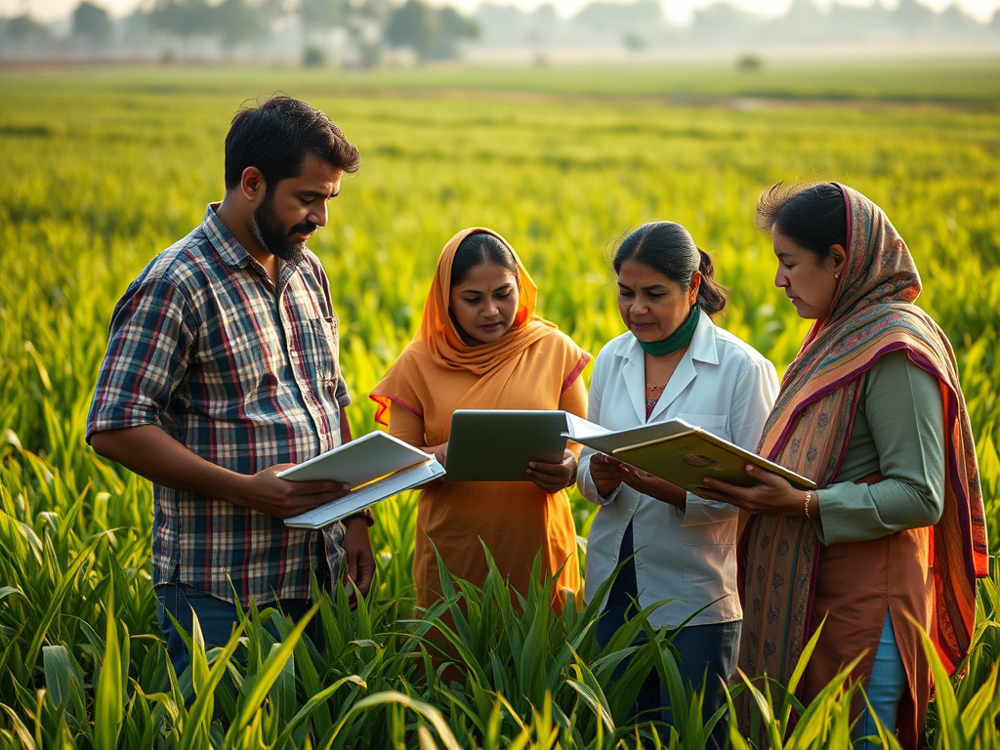

This platform is initiated by Professor Dr. Md. Kamrul Hasan. At the moment, Professor Hasan holds a full time position as an academic employee in the Department of Agricultural Extension and Rural Development, Faculty of Agriculture, Patuakhali Science and Technology University, Dumki, Patuakhali 8602, Bangladesh.
“The primary purpose of this website is to advance contemporary knowledge for students and learners across research, teaching, and extension domains. Social research is our central theme and we are also committed to extend meaningful collaborations and partnerships with other disciplines to enrich academic excellence and minimize the gap between science and policy.”
Professor Dr. Md. Kamrul Hasan has completed his PhD degree in Ecosystem Management from the School of Environmental and Rural Science, University of New England, Australia. After graduation from Bangladesh Agricultural University in Bachelor of Science in Agriculture and Master of Science in Agricultural Extension Education, he completed an International Master of Science in Rural Development (IMRD) from Bioscience Engineering in Ghent University, Belgium. He studied human-environment interactions and climate science in Humboldt University, Germany followed by a case study in Slovakia to understand the community-led development activities under common agricultural policy of European Union. Economics, Econometrics, Advanced Statistics, and Policy Analysis were some of the major focus of his IMRD program.

Dr. Md. Kamrul Hasan is a professor of Agricultural Extension and Rural Development. His attended academic institutions are Pekua Govt. Primary School (1987-1991), Bashtoil M. M. High School (1992-1997), HSC (Science group, 1999) at Govt. M. M. Ali College (Tangail), B.Sc.Ag. (Hons.) at Bangladesh Agricultural University (BAU, 2005), International Master of Science in Rural Development (IMRD, Ghent University, Humboldt University and Slovak University of Agriculture) in Belgium, Germany and Slovakia, and University of New England in Australia.
Strong mathematical problem-solving capacity opened his way to become a big fan of statistics subject. He has been an expert in Microsoft Office programs, operating systems, networking, video and audio editing and statistical software (MSTAT, SPSS). Further improvement in using statistical and programming language (R, GAMS, SAS), including the application of machine learning algorithm and econometric analysis using Python and R programming language. He is also skilled in cartography and spatial analysis using ArcGIS software.
As a graduate in agricultural sciences, Professor Hasan studied a wide range of subjects related to production, protection, extension, marketing and policy. Environmental Science and Development Economics attracted him while he was in Europe studying under Erasmus Mundus program. His research focused on Climate change, food security and farming systems. He is supervising Master’s and PhD students related to such fields of interests. Besides research, his taught courses include Research Methodology, Training Management, Communication, Learning Theories and Methods, Leadership and Groups, Gender Development, and Technology Transfer.
Currently, Professor Hasan is the Chairman of Agricultural Extension and Rural Development and also worked as the Director of Institutional Quality Assurance Cell (IQAC) of Patuakhali Science and Technology University. As a part of this job, he organized and delivered training on quality related topics, e.g., Curriculum Development, National Integrity System, Right to Information, Grievance Redress, Citizen Charter, Public Procurement, and Pedagogy (teaching-learning, active learning, blended learning). He also acts as an active team member for organizing regular extension field tours for undergraduate students.
Mia, S., Roja, N. T., Sattar, M. A., Ahmed, R., Bhuyan, M. I., Islam, M. R., Badhan, A., & Hasan, M. K. (2025). Prioritizing climate-smart agricultural technologies for coastal Bangladesh: A multicriteria assessment. Agricultural Systems, 230, 104489. https://doi.org/10.1016/j.agsy.2025.104489
Ratnayake, S. S., Reid, M., Larder, N., Hunter, D., Hasan, M. K., Dharmasena, P. B., Kogo, B., Senavirathna, M., & Kariyawasam, C. S. (2024). Climate and Land Use Change Pressures on Food Production in Social-Ecological Systems: Perceptions from Farmers in Village Tank Cascade Systems of Sri Lanka. Sustainability, 16(19), 8603. https://doi.org/10.3390/su16198603
Hasan, M. K. and Kumar, L. (2024). Determining adequate sample size for social survey research. Journal of Bangladesh Agricultural University, 22(2), 146-157. https://doi.org/10.3329/jbau.v22i2.74547
Maiti, A., Hasan, M. K., Sannigrahi, S., et al. (2024). Optimal rainfall threshold for monsoon rice production in India varies across space and time. Communications Earth & Environment, 5, 302. https://doi.org/10.1038/s43247-024-01414-7
Siddik, M. A., Hasan, M. K., Islam, A. R. M. T., & Islam, M. S. (2023). Coastal Community Valorization through Patuakhali Science and Technology University: Policy Support and Way Forwards. Journal of Planning Education and Research, 45(1), 14-24. https://doi.org/10.1177/0739456X231195620
Hasan, M. K., and Kumar, L. (2022). Changes in coastal farming systems in a changing climate. Regional Environmental Change, 22, 113. https://doi.org/10.1007/s10113-022-01962-8
Kogo, B. K., Kumar, L., Koech, R., and Hasan, M. K. (2022). Response to climate change in a rain-fed crop production system: Insights from maize farmers of western Kenya. Mitigation and Adaptation Strategies for Global Change, 27, 50. https://doi.org/10.1007/s11027-022-10023-8
Kogo, B. K., Kumar, L., Koech, R., & Hasan, M. K. (2021). Climatic and non-climatic risks in rainfed crop production systems: insights from maize farmers of western Kenya. Climate and Development, 13(10), 869–878. https://doi.org/10.1080/17565529.2020.1867043
Hasan, M. K., & Kumar, L. (2021). Yield trends and variabilities explained by climatic change in coastal and non-coastal areas of Bangladesh. Science of the Total Environment, 795, 148814. https://doi.org/10.1016/j.scitotenv.2021.148814
Hasan, M. K., & Kumar, L. (2020). Discriminated perceptions of climatic impacts on coastal farm management practices. Journal of Environmental Management, 278, 111550. https://doi.org/10.1016/j.jenvman.2020.111550
Gopalakrishnan, T., Kumar, L., & Hasan, M. K. (2020). Coastal settlement patterns and exposure to sea-level rise in the Jaffna Peninsula, Sri Lanka. Population and Environment, 42, 129-145. https://doi.org/10.1007/s11111-020-00350-w
Hasan, M. K., & Kumar, L. (2020). Perceived farm-level climatic impacts on coastal agricultural productivity in Bangladesh. Climatic Change, 161, 617-636. https://doi.org/10.1007/s10584-020-02708-3
Jayasinghe, S. L., Kumar, L., & Hasan, M. K. (2020). Relationship between Environmental Covariates and Ceylon Tea Cultivation in Sri Lanka. Agronomy, 10(4), 476. https://doi.org/10.3390/agronomy10040476
Hasan, M. K., & Kumar, L. (2020). Meteorological data and farmers’ perception of coastal climate in Bangladesh. Science of the Total Environment, 704, 135384. https://doi.org/10.1016/j.scitotenv.2019.135384
Chhogyel, N., Kumar, L., Bajgai, Y., & Hasan, M. K. (2020). Perception of farmers on climate change and its impacts on agriculture across various altitudinal zones of Bhutan Himalayas. International Journal of Environmental Science and Technology, 17, 3607-3620. https://doi.org/10.1007/s13762-020-02662-8
Hasan, M. K., Kumar, L., & Gopalakrishnan, T. (2020). Inundation modelling for Bangladeshi coasts using downscaled and bias-corrected temperature. Climate Risk Management, 27, 100207. https://doi.org/https://doi.org/10.1016/j.crm.2019.100207
Gopalakrishnan, T., Hasan, M. K., Haque, A. T. M. S., Jayasinghe, S. L., & Kumar, L. (2019). Sustainability of coastal agriculture under climate change. Sustainability, 11(24), 7200. https://doi.org/10.3390/su11247200
Hasan, M. K., and Kumar, L. (2019). Comparison between meteorological data and farmer perceptions of climate change and vulnerability in relation to adaptation. Journal of Environmental Management, 237, 54-62. https://doi.org/10.1016/j.jenvman.2019.02.028
Hasan, M. K., Desiere, S., D’Haese, M., & Kumar, L. (2018). Impact of climate-smart agriculture adoption on the food security of coastal farmers in Bangladesh. Food Security, 10, 1073-1088. https://doi.org/10.1007/s12571-018-0824-1
| Level of Study | Name of Student | Title | Role |
|---|---|---|---|
| MS/MBA | Swapon Chandra Hawlader | Investigating the Impact of Climatic Extreme on Homestead Livestock Farming | Supervisor |
| PhD | Md. Sumon Howlader | Strategies for Implementation of Climate-Smart Agriculture (CSA) Practices in Bangladesh | Co-supervisor |
| PhD | Mahmuda Khanom | Effect of Market Access and Value Chains on the Adoption of Climate-Smart Agriculture by Smallholder Farmers | Supervisor |
| MS/MBA | Jasika Jerrin Renesa | Livelihood Strategy and Food Security of Low Income Households in Dumki Upazila of Patuakhali District | Supervisor |
| MS/MBA | Jubaer Ahmed | Crop Diversification and Food Security of Rice Growers of Dumki Upazila in Patuakhali | Supervisor |
| MS/MBA | Shuvajit Roy Turjya | Adoption of Climate Resilient Rice Varieties by the Farmers of Dumki Upazila | Supervisor |
| Level Of Study | Name of Student | Title | Role |
|---|---|---|---|
| MS/MBA | Md. Zahid Hasan | Homestead poultry rearing and women empowerment in Barguna Sadar upazila of Bangladesh | Co-supervisor |
| MS/MBA | Halima Akter | Weather information seeking behavior of small-scale fish farmers in selected areas of Patukhali District | Co-supervisor |
| MS/MBA | Tanmoy Sarkar Utsha | Adoption of aquaculture practices at Dumki upazila under Patuakhali district | Co-supervisor |
| MS/MBA | Rezwana Ferdousi | Performance Assessment of Farmers’ Groups under East-West Seed Knowledge Transfer (EWS-KT) | Co-supervisor |
| MS/MBA | Khan Alimul Razi | Occupational Risk and Safety Measures of Coastal Fishermen in Patuakhali | Supervisor |
| MS/MBA | Sadman Sarar | Livelihood and Household Dietary Diversity of Fishermen in Patuakhali District | Supervisor |
| MS/MBA | Rakibul Islam | Effectiveness of Training for Small Scale Fish Farmers in Patuakhali | Supervisor |
| MS/MBA | S.M. Shariar Rahman | Livelihood Status and Poverty Line of Fish Hatchery Workers in Jashore District | Supervisor |
| MS/MBA | Tanusree Halder | Socioeconomic Conditions of Dry Fish Producers in the South-Central Coastal Region of Bangladesh | Supervisor |
| MS/MBA | Anika Ahmed | Climate Vulnerability of Rural Households in the Exposed Central Coast of Bangladesh | Supervisor |
| MS/MBA | Shimul Banik | Livelihood Strategies and Food Security of Coastal Fishermen in Patuakhali | Supervisor |